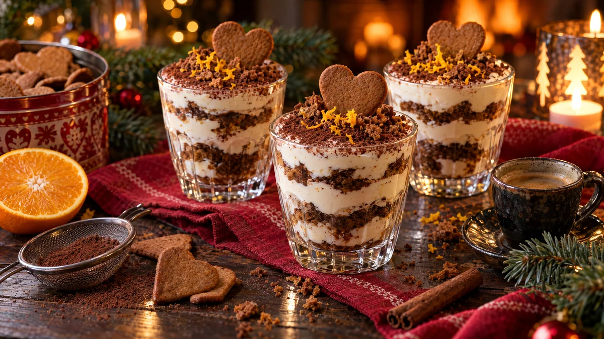

RESTFEST · RECEPTDessert
Pepparkakstiramisu med apelsin och kaffe
Pepparkakorna som blev kvar i burken, morgonens kaffe, en burk mascarpone och en apelsin. Kakorna doppas i kaffe och varvas med en luftig, apelsinfrisk kräm i små glas. Toppen pudras med kakao och några pepparkakssmulor. Italiens mest älskade dessert i svensk julskrud, utan att du behöver sätta på ugnen.
- Förberedelse
- 20 min + minst 4 tim i kylen
- Tillagning
- 0 min
- Portioner
- 6
- Nivå
- Nybörjare
 Det här behöver du
Det här behöver du
Tryck på + vid det du behöver köpa.
Kräm
Kaffedopp
Varvning
Till servering
Gör så här
- Rör ut mascarponen med florsocker, vaniljsocker och apelsinskal tills den är slät.
- Vispa grädden till mjuka toppar i en annan skål. Vänd ner den i mascarponen i två omgångar, försiktigt så att krämen blir luftig.
- Blanda kaffe, apelsinjuice och socker i en djup tallrik.
- Doppa pepparkakorna snabbt i kaffet, bara ett par sekunder. De mjuknar mer i kylen, och för blöta kakor blir mos.
- Varva i 6 glas: ett lager pepparkakor, ett lager kräm, ett lager pepparkakor och sist ett lager kräm. Bryt kakorna så att de passar glasen.
- Täck glasen och kyl dem i minst 4 timmar, gärna över natten, tills kakorna är mjuka som en tårtbotten.
Dekoration och servering
- Pudra kakao över ytan genom en sil precis före servering, så att den inte blir fuktig.
- Strö över lite krossade pepparkakor och rivet apelsinskal.
- Stick ner en hel pepparkaka på kant i varje glas.
- Servera i små glas, kaffekoppar eller i en stor form att ösa ur på bordet.
- Tiramisun håller i 2 dagar i kylen.
Mått och ugnstemperaturer
Måtten är svenska (dl, msk, tsk, krm). Ugnstemperaturerna gäller vanlig ugn med över- och undervärme; med varmluft, sänk med 20 grader.